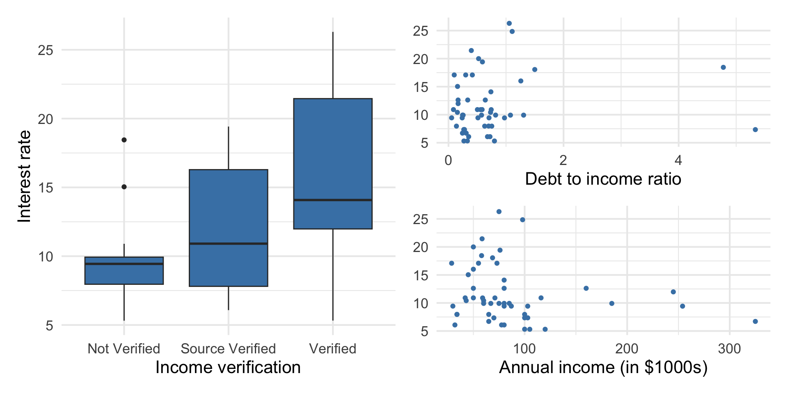
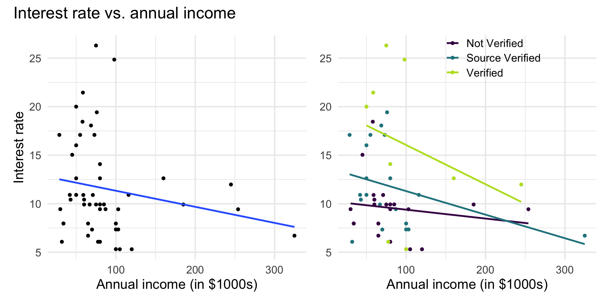

# load packages
library(tidyverse)
library(tidymodels)
library(openintro)
library(patchwork)
library(knitr)
library(kableExtra)
library(viridis) #adjust color palette
# set default theme and larger font size for ggplot2
ggplot2::theme_set(ggplot2::theme_minimal(base_size = 16))Multiple linear regression (MLR)
Types of predictors
Announcements
Lab 02 due TODAY at 11:59pm
HW 01 due Thursday, January 30 at 11:59pm
Topics
Categorical predictors
Interaction terms
Centering predictors
Computing setup
Data: Peer-to-peer lender
Today’s data is a sample of 50 loans made through a peer-to-peer lending club. The data is in the loan50 data frame in the openintro R package.
# A tibble: 50 × 4
annual_income_th debt_to_income verified_income interest_rate
<dbl> <dbl> <fct> <dbl>
1 59 0.558 Not Verified 10.9
2 60 1.31 Not Verified 9.92
3 75 1.06 Verified 26.3
4 75 0.574 Not Verified 9.92
5 254 0.238 Not Verified 9.43
6 67 1.08 Source Verified 9.92
7 28.8 0.0997 Source Verified 17.1
8 80 0.351 Not Verified 6.08
9 34 0.698 Not Verified 7.97
10 80 0.167 Source Verified 12.6
# ℹ 40 more rowsVariables
Predictors:
annual_income_th: Annual income (in $1000s)debt_to_income: Debt-to-income ratio, i.e. the percentage of a borrower’s total debt divided by their total incomeverified_income: Whether borrower’s income source and amount have been verified (Not Verified,Source Verified,Verified)
Response: interest_rate: Interest rate for the loan
Response vs. predictors

Goal: Use these predictors in a single model to understand variability in interest rate.
Model fit in R
int_fit <- lm(interest_rate ~ debt_to_income + verified_income + annual_income_th,
data = loan50)
tidy(int_fit) |>
kable(digits = 3)| term | estimate | std.error | statistic | p.value |
|---|---|---|---|---|
| (Intercept) | 10.726 | 1.507 | 7.116 | 0.000 |
| debt_to_income | 0.671 | 0.676 | 0.993 | 0.326 |
| verified_incomeSource Verified | 2.211 | 1.399 | 1.581 | 0.121 |
| verified_incomeVerified | 6.880 | 1.801 | 3.820 | 0.000 |
| annual_income_th | -0.021 | 0.011 | -1.804 | 0.078 |
Categorical predictors
Matrix form of multiple linear regression
\[ \underbrace{ \begin{bmatrix} y_1 \\ \vdots \\ y_n \end{bmatrix} }_ {\mathbf{y}} \hspace{3mm} = \hspace{3mm} \underbrace{ \begin{bmatrix} 1 &x_{11} & \dots & x_{1p}\\ \vdots & \vdots &\ddots & \vdots \\ 1 & x_{n1} & \dots &x_{np} \end{bmatrix} }_{\mathbf{X}} \hspace{2mm} \underbrace{ \begin{bmatrix} \beta_0 \\ \beta_1 \\ \vdots \\ \beta_p \end{bmatrix} }_{\boldsymbol{\beta}} \hspace{3mm} + \hspace{3mm} \underbrace{ \begin{bmatrix} \epsilon_1 \\ \vdots\\ \epsilon_n \end{bmatrix} }_\boldsymbol{\epsilon} \]
Indicator variables
Suppose we want to predict the amount of sleep a Duke student gets based on whether they are in Pratt (Pratt Yes/ No are the only two options). Consider the model
\[ Sleep_i = \beta_0 + \beta_1\mathbf{1}(Pratt_i = \texttt{Yes}) + \beta_2\mathbf{1}(Pratt_i = \texttt{No}) \]
Write out the design matrix for this hypothesized linear model.
Demonstrate that the design matrix is not of full column rank (that is, affirmatively provide one of the columns in terms of the others).
Use this intuition to explain why when we include categorical predictors, we cannot include both indicators for every level of the variable and an intercept.
Indicator variables
Suppose there is a categorical variable with \(k\) levels
We can make \(k\) indicator variables from the data - one indicator for each level
An indicator (dummy) variable takes values 1 or 0
1 if the observation belongs to that level
0 if the observation does not belong to that level
Indicator variables for verified_income
loan50 <- loan50 |>
mutate(
not_verified = if_else(verified_income == "Not Verified", 1, 0),
source_verified = if_else(verified_income == "Source Verified", 1, 0),
verified = if_else(verified_income == "Verified", 1, 0)
). . .
# A tibble: 3 × 4
verified_income not_verified source_verified verified
<fct> <dbl> <dbl> <dbl>
1 Not Verified 1 0 0
2 Verified 0 0 1
3 Source Verified 0 1 0Indicator variables in the model
- We will use \(k-1\) of the indicator variables in the model.
- The baseline is the category that doesn’t have a term in the model.
- The coefficients of the indicator variables in the model are interpreted as the expected change in the response compared to the baseline, holding all other variables constant.
. . .
loan50 |>
select(verified_income, source_verified, verified) |>
slice(1, 3, 6)# A tibble: 3 × 3
verified_income source_verified verified
<fct> <dbl> <dbl>
1 Not Verified 0 0
2 Verified 0 1
3 Source Verified 1 0Take a look at the design matrix in AE 02
Interpreting verified_income
| term | estimate | std.error | statistic | p.value | conf.low | conf.high |
|---|---|---|---|---|---|---|
| (Intercept) | 10.726 | 1.507 | 7.116 | 0.000 | 7.690 | 13.762 |
| debt_to_income | 0.671 | 0.676 | 0.993 | 0.326 | -0.690 | 2.033 |
| verified_incomeSource Verified | 2.211 | 1.399 | 1.581 | 0.121 | -0.606 | 5.028 |
| verified_incomeVerified | 6.880 | 1.801 | 3.820 | 0.000 | 3.253 | 10.508 |
| annual_income_th | -0.021 | 0.011 | -1.804 | 0.078 | -0.043 | 0.002 |
. . .
- The baseline level is
Not verified. - People with source verified income are expected to take a loan with an interest rate that is 2.211% higher, on average, than the rate on loans to those whose income is not verified, holding all else constant.
. . .
What is the expected interest rate for someone whose income is Verified, who has a debt-to-income ratio of 0 and annual income of $0?
Interaction terms
Interaction terms
- Sometimes the relationship between a predictor variable and the response depends on the value of another predictor variable.
- This is an interaction effect.
- To account for this, we can include interaction terms in the model.
Interest rate vs. annual income
The lines are not parallel indicating there is a potential interaction effect. The slope of annual income differs based on the income verification.

Application exercise
Interaction term in model
int_fit_2 <- lm(interest_rate ~ debt_to_income + verified_income + annual_income_th + verified_income * annual_income_th,
data = loan50)| term | estimate | std.error | statistic | p.value |
|---|---|---|---|---|
| (Intercept) | 9.560 | 2.034 | 4.700 | 0.000 |
| debt_to_income | 0.691 | 0.685 | 1.009 | 0.319 |
| verified_incomeSource Verified | 3.577 | 2.539 | 1.409 | 0.166 |
| verified_incomeVerified | 9.923 | 3.654 | 2.716 | 0.009 |
| annual_income_th | -0.007 | 0.020 | -0.341 | 0.735 |
| verified_incomeSource Verified:annual_income_th | -0.016 | 0.026 | -0.643 | 0.523 |
| verified_incomeVerified:annual_income_th | -0.032 | 0.033 | -0.979 | 0.333 |
Interpreting interaction terms
- What the interaction means: The effect of annual income on the interest rate differs by -0.016 when the income is source verified compared to when it is not verified, holding all else constant.
- Interpreting
annual_incomefor source verified: If the income is source verified, we expect the interest rate to decrease by 0.023% (-0.007 + -0.016) for each additional thousand dollars in annual income, holding all else constant.
Model assessment and comparison
RMSE & \(R^2\)
Root mean square error, RMSE: A measure of the average error (average difference between observed and predicted values of the outcome)
R-squared, \(R^2\) : Percentage of variability in the outcome explained by the regression model
Comparing models
When comparing models, do we prefer the model with the lower or higher RMSE?
Though we use \(R^2\) to assess the model fit, it is generally unreliable for comparing models with different number of predictors. Why?
\(R^2\) will stay the same or increase as we add more variables to the model . Let’s show why this is true.
If we only use \(R^2\) to choose a best fit model, we will be prone to choose the model with the most predictor variables.
Adjusted \(R^2\)
- Adjusted \(R^2\): measure that includes a penalty for unnecessary predictor variables
- Similar to \(R^2\), it is a measure of the amount of variation in the response that is explained by the regression model
\(R^2\) and Adjusted \(R^2\)
\[R^2 = \frac{SSM}{SST} = 1 - \frac{SSR}{SST}\]
. . .
\[R^2_{adj} = 1 - \frac{SSR/(n-p-1)}{SST/(n-1)}\]
where
\(n\) is the number of observations used to fit the model
\(p\) is the number of terms (not including the intercept) in the model
Using \(R^2\) and Adjusted \(R^2\)
- Adjusted \(R^2\) can be used as a quick assessment to compare the fit of multiple models; however, it should not be the only assessment!
- Use \(R^2\) when describing the relationship between the response and predictor variables
. . .
LaTex
Latex in this class
For this class you will need to be able to…
Properly write mathematical symbols, e.g., \(\beta_1\) not B1, \(R^2\) not R2
Write basic regression equations, e.g., \(\hat{y} = \beta_0 + \beta_1x_1 + \beta_2x_2\)
Write matrix equations: \(\mathbf{y} = \mathbf{X}\boldsymbol{\beta} + \boldsymbol{\epsilon}\)
Write hypotheses (we’ll start this next week), e.g., \(H_0: \beta = 0\)
You are welcome to but not required to write math proofs using LaTex.
Application exercise
Recap
Interpreted categorical predictors and interaction terms
Assessed model fit using RSME and \(R^2\)
Compared models using \(Adj. R^2\)
Introduced LaTex
Next class
Geometric interpretation
Inference for regression
See Sep 17 prepare